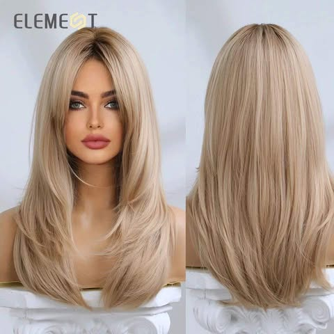
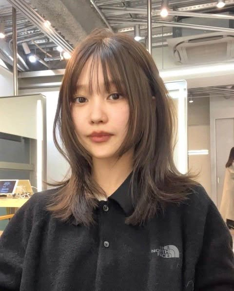
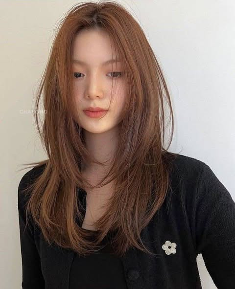
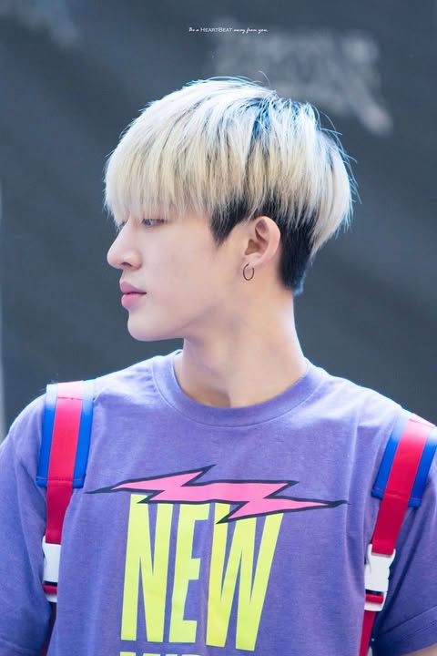
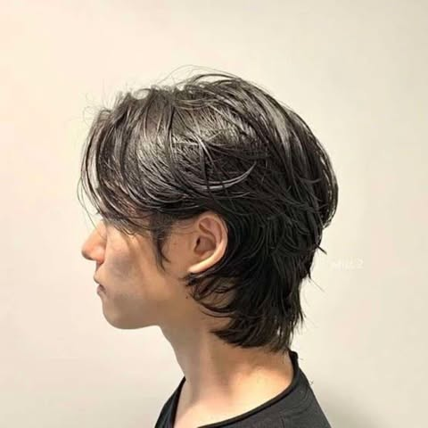

1)ทรงผมยาว สไลด์เลเยอร์
ทรงผมยาว สไลด์เลเยอร์สำหรับผู้หญิง จะตัดไล่ระดับของผมลงมาเรื่อยๆ เน้นไปที่ปลายผมที่จะตัดสไลด์เพื่อเพิ่มมิติและความพลิ้วไหว โดยทรงผมนี้เหมาะสำหรับผู้หญิงที่มีรูปหน้ากลม มีแก้มใหญ่

2)ทรง Mullet
สำหรับผู้หญิงนั้น ก็จะมีความซอฟท์มากกว่าทรงผมของผู้ชายค่ะ โดยช่วงผมด้านข้างบริเวณหู ปกติเราจะเห็นว่าหนุ่มๆ เค้าจะเน้นตัดแบบเปิดช่วงหูกันเป็นส่วนใหญ่ แต่สำหรับทรงของสาวๆ นั้นจะไม่ได้ตัดเปิดช่วงหูไปเลยค่ะ แต่จะมีการซอยไล่ระดับลงมา และจะมีการตัดหน้าม้าร่วมด้วย

3)ทรงผมสไลด์เลเยอร์
ป็นทรงเหมาะสำหรับสาว ๆ ที่มีผมเส้นเล็กและลีบแบน และยังเหมาะกับผู้ที่ต้องการจะปกปิดส่วนแก้ม เมื่อตัดแล้วจะช่วยให้ผมดูมีน้ำหนักและดูหนามากขึ้น
4)ทรงผมชายปาดเรียบ (Comb Over)
เป็นทรงผมสไตล์วินเทจ นิยมตัดกันมาตั้งแต่ยุคเก่าจนถึงปัจจุบัน ปาดผมด้านบนขึ้น หรือเสยผม ด้านข้างไล่ระดับลงมา เป็นทรงผมที่หล่อเท่บาด ให้ความคลาสสิค

5)ทรง Two Block
ทรงนี้เน้นตัดผมด้านข้างให้สั้น ตามแบบฉบับอันเดอร์คัท ส่วนด้านบนสามารถทิ้งความยาวไว้ได้ เพียงแค่นี้ก็จะช่วยปรับมิติรูปหน้าให้เรียวขึ้นอีกด้วย

6)ทรงผม Wolf Cut
ทรงนี้นอกจากจะช่วยทำให้ผมดูหนาและมีวอลลุ่มแล้ว แต่งตัวอย่างไรก็ดูเป็นคนเท่ และยังช่วยปิดแก้มอีกด้วย